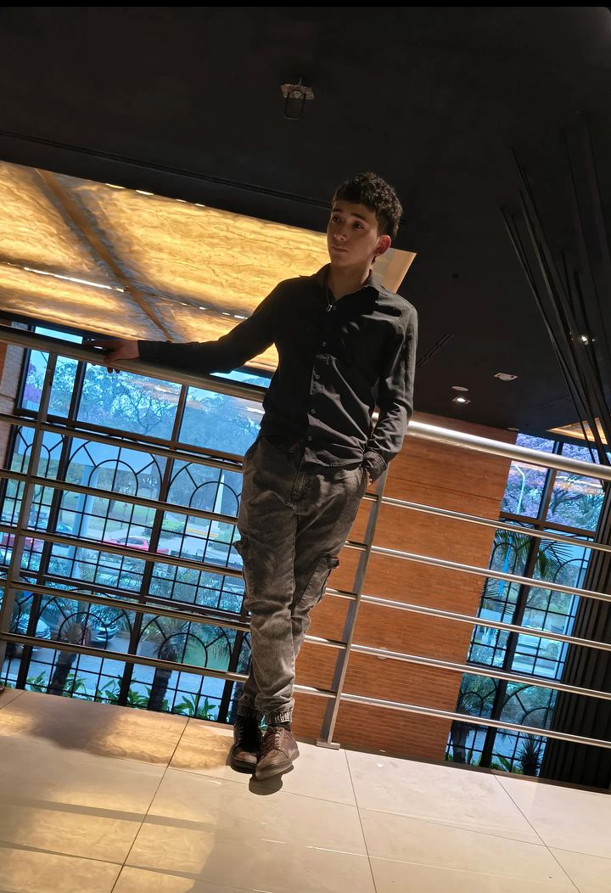

Jose Gabriel Cruz
Datos Personales
- Edad: 20 años
- Fecha de Nacimiento: 03/03/2006
- DNI: 46.054.294
- Domicilio: Av. Independencia 1300, Alderetes, Tucumán
- Celular: 3816900041
- Correo: gaby46054cruz@gmail.com
Sobre Mí
Apasionado por el ecosistema tecnológico, me desempeño activamente como Técnico en Redes Informáticas, Creador Web y especialista en implementación de soluciones tecnológicas integrales. Cuento con una sólida capacidad de adaptación, destacándome en el manejo avanzado y aplicación operativa de **Inteligencias Artificiales** para optimizar flujos de trabajo.
Esta plataforma web fue diseñada y desarrollada de manera autónoma utilizando estándares profesionales de **HTML, CSS y JavaScript**, reflejando mi enfoque en el diseño limpio, responsivo y de alto rendimiento visual.
Especializaciones Técnicas
Redes Informáticas
Diseño, despliegue y mantenimiento de infraestructuras de red de datos corporativas e institucionales:
- Arquitectura, cableado estructurado y canalización física de datos.
- Configuración y administración de Routers, Switches, Access Points y Gateways.
- Segmentación de redes mediante VLANs, direccionamiento IP (IPv4) y subneteo eficiente.
- Diagnóstico preventivo, mapeo de infraestructura y resolución de fallas en redes LAN / WLAN.
Sistemas de Seguridad Digital
Planificación integral, montaje y puesta a punto de circuitos cerrados de televisión (CCTV):
- Instalación y direccionamiento de cámaras de tecnología IP.
- Configuración avanzada de sistemas de almacenamiento físico y digital mediante NVR y DVR.
- Habilitación de acceso remoto para monitoreo en vivo desde múltiples dispositivos externos.
Sistemas de Gestión y Electrónica
Soluciones orientadas al control corporativo y comercial técnico:
- Implementación, auditoría y manipulación de sistemas de control de stock y software de ventas.
- Conocimientos básicos aplicados en electrónica analógica y digital para la reparación menor de componentes físicos de hardware.